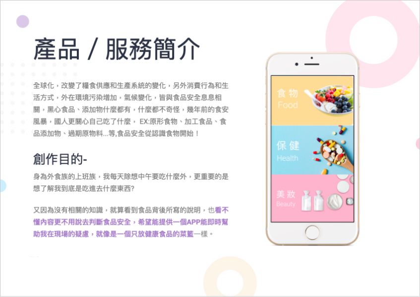
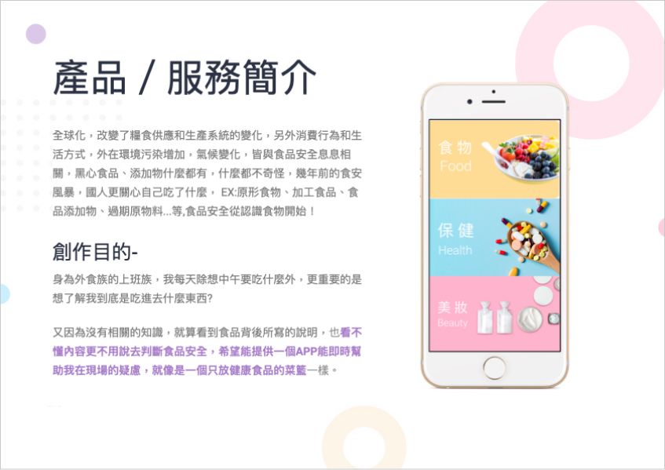
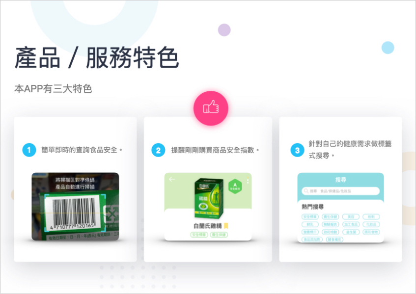
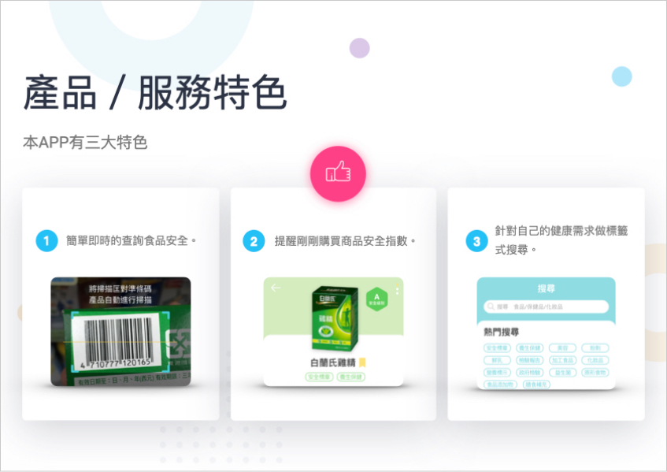
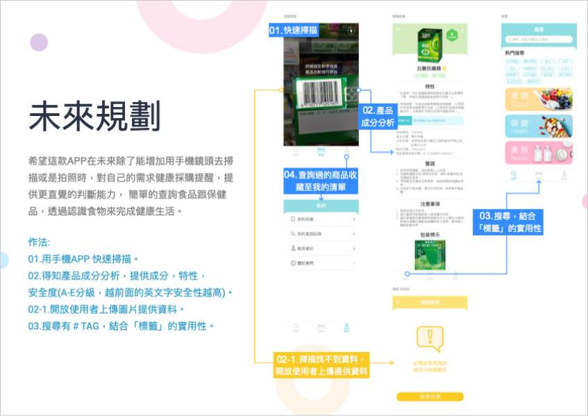
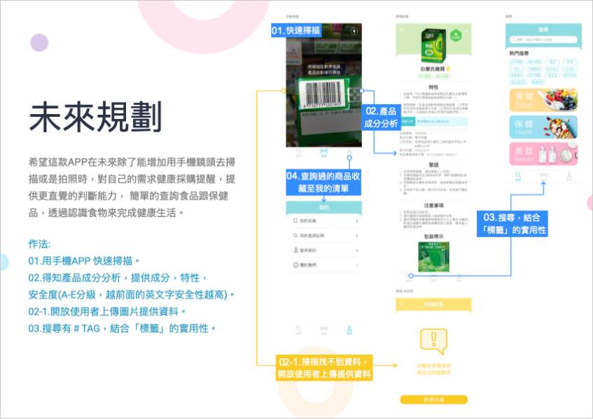
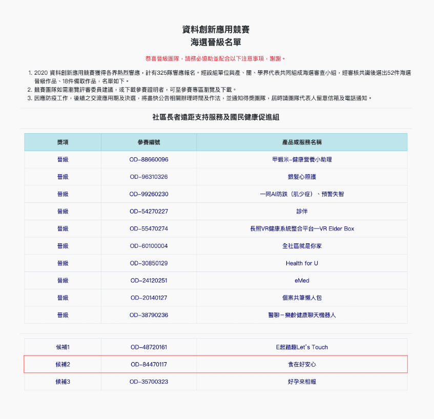

2020資料創新應用競賽-食在好安心 App
UX Research・UI・Prototype
產品服務構想書 Project Details
描述 Description－
為促使民眾運用資料(開放資料Open Data、企業資料、巨量資料Big Data、其他資料)，透過挖掘、重組、混搭等方式，發展具創意與實用價值之產品或服務，2020資料創新應用競賽特別邀請各政府單位設立組別，以提供施政與營運建議，進而提升服務品質，鼓勵創意與創業發展。
參賽編號 Entry number－
OD-84470117 社區長者遠距支持服務及國民健康促進組。
產品或服務名稱 Name－
「食」在好安心。
資料來源 Source－
衛生福利部食品藥物管理署
- 健康食品資料集 https://data.fda.gov.tw/frontsite/data/DataAction.do?method=doDetail&infoId=19
- 化粧品GMP查核名單資料集 https://data.fda.gov.tw/frontsite/data/DataAction.do?method=doDetail&infoId=99
- 消費紅綠燈 https://consumer.fda.gov.tw/
- 食品添加物許可證資料集 https://data.fda.gov.tw/frontsite/data/DataAction.do?method=doDetail&infoId=3
- 食品營養成分資料集 https://data.fda.gov.tw/frontsite/data/DataAction.do?method=doDetail&infoId=20
- 可供食品使用原料彙整一覽表 https://data.fda.gov.tw/frontsite/data/DataAction.do?method=doDetail&infoId=4

健康食品資料集
資料來源網址皆附上資料內容，主要以衛生福利部所提供的 Open Data 來發想這次的產品構想書。過程 Process
觀察與發想 Ideal：
全球化，改變了糧食供應和生產系統的變化，另外消費行為和生活方式，外在環境污染增加，氣候變化，皆與食品安全息息相關，黑心食品什麼都有，什麼都不奇怪，幾年前的食安風暴，國人更關心自己吃了什麼。
ex:原形食物，加工食品，食品添加物，過期原物料...等,食品安全從認識食物開始！
身為外食族的上班族，我每天除想中午要吃什麼外，更重要的是想了解我到底是吃進去什麼東西?
同理心地圖 Empathy Map：
想法和感覺、聽到了什麼、看到了什麼、說／做了什麼、痛苦點、需求點。

完成簡報內容 Report
 


 

 

比賽結果 Result
https://opendata-contest.tca.org.tw/announcement.aspx
第一次參加比賽，在眾多的海選中雖然比賽結果為備取2，也算是小小的肯定。
